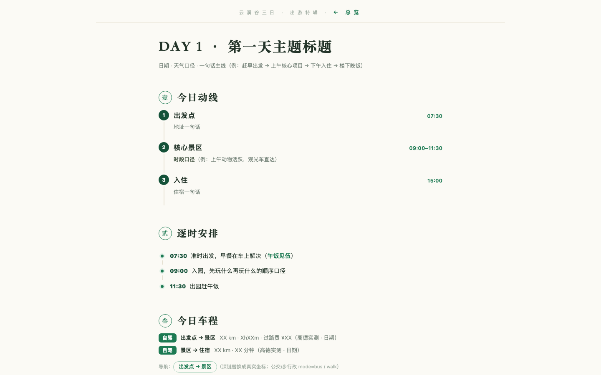
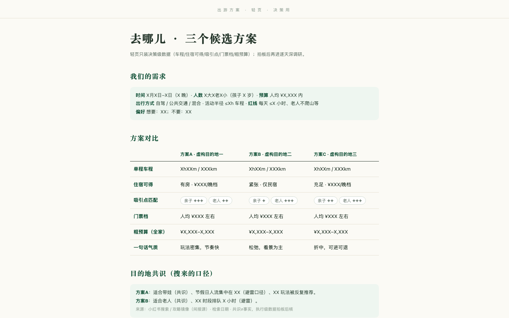

壹30 秒装上
不用找第三方市场，这个仓库自己就是插件市场，两条命令装完，第三句直接开工。ZCode / Claude Code 与 Codex 都支持。
# ZCode / Claude Code
/plugin marketplace add jerryjiao/ai-trip-planner
/plugin install ai-trip-planner@ai-trip-planner
# Codex（CLI ≥ 0.110）
codex plugin marketplace add jerryjiao/ai-trip-planner
codex plugin add ai-trip-planner@ai-trip-planner
# 开跑：告诉它想去哪（Codex 直接说「帮我做份攻略」）
/trip-plan
一条 key 都不用先申请：地图环节扫码登录网页版就行；高德 key 想配再配，配了路线图更精细。缺了什么怎么办，见第肆节。
贰四个命令
| 命令 | 干什么 |
|---|
| /trip-plan | 开新攻略；做到一半的再喊它，自动接着上次进度 |
| /trip-go <方案> | 选定方案，进入逐天细化；直接说「就选X」也一样 |
| /trip-doctor | 自检：哪些网站登录了、各平台还能查多少次，✅/⚠️/❌ 一目了然 |
| /trip-help | 迷路导航：现在在哪、下一步干嘛 |
斜杠命令是 ZCode / Claude Code 的入口；Codex 下不用命令，$ai-trip-planner 或一句自然语言直达同一工作流。
叁五个平台自动查
五家平台各管一摊，按顺序一层层查实：先看哪里好玩，再定哪家吃，再比哪家住，最后核车程路线。
| 平台 | 定什么 | 怎么查 |
|---|
| 小红书 | 玩法 / 避雷 / 路线顺不顺 | 只看不发，查的次数有上限管着 |
| 大众点评 | 定餐厅 | 按好评榜选店，进店把评价一条条读完 |
| 携程 | 订哪里的住宿：你出行那几天的房价 / 房型 / 取消政策 | 读详情页 + 生成订房链接 |
| 飞猪 | 住宿比价 + 备用深链 | 同店交叉比价，价差如实标注 |
| 高德 | 车程 / 坐标 / 路线图 | 不用 key 就能用，配 key 更精细 |
订房深链：查好的住宿直接生成带日期与店名的订房页链接，嵌在攻略的住宿卡片里，家人点一下就到订房页——下单仍由你自己完成，插件只读不代订。
肆工具不齐？照样做完。
缺了哪样，就自动换条路走，攻略照样做得完。
| 缺什么 | 自动换成 | 影响 |
|---|
| 小红书登录态 | 绕道搜索引擎找 | 玩法情报质量略降 |
| 点评登录 | 公开快照 + 公开评价页 | 定店标「未核实」 |
| 携程/飞猪登录 | 不登录也能看到的公开房价 | 比价结果标「待核实」；订房深链不受影响 |
| 高德 key | 网页版整页截图路线图 | 精细度略降 |
| wrangler | 本地静态站交付 | 不上线，其余不变 |
伍产出长什么样
杂志排版的网页攻略，手机打开一样好用：点目录直接跳到餐厅，点地址唤起高德导航，住宿卡片按钮点一下到订房页。
总览页：刊头 / hero / 行程总览 / 预算与装备清单（截图为模板虚构占位示例）

日页：今日动线 / 逐时安排 / 车程 / 门票 / 餐厅首选备选（虚构示例）

阶段一轻页：方案对比 + 目的地共识 + 推荐等拍板（虚构示例）
同一模板在手机宽度下自动单列、表格横滑（虚构示例）
截图全部来自插件自带模板的虚构占位实例，非任何真实行程。
陆边界
只读不代操作：不代下单、不代付款、不代发布；小红书永久只查不发。
登录与验证交还用户：扫码、滑块人工完成，触发风控即停。
查的次数有保守上限（是我们设的经验值，不是平台规定），可自行调整。尊重各平台服务条款。
—— 完 ——
ai-trip-planner · MIT ·
GitHub